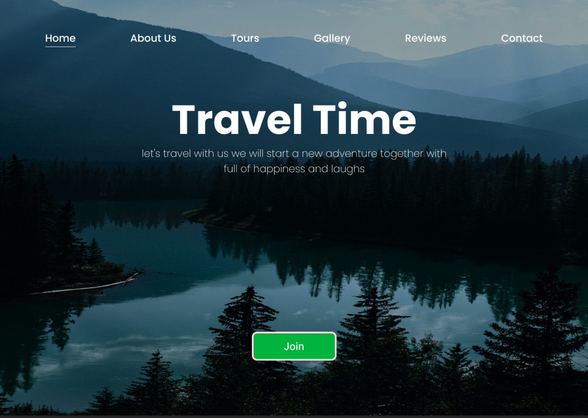
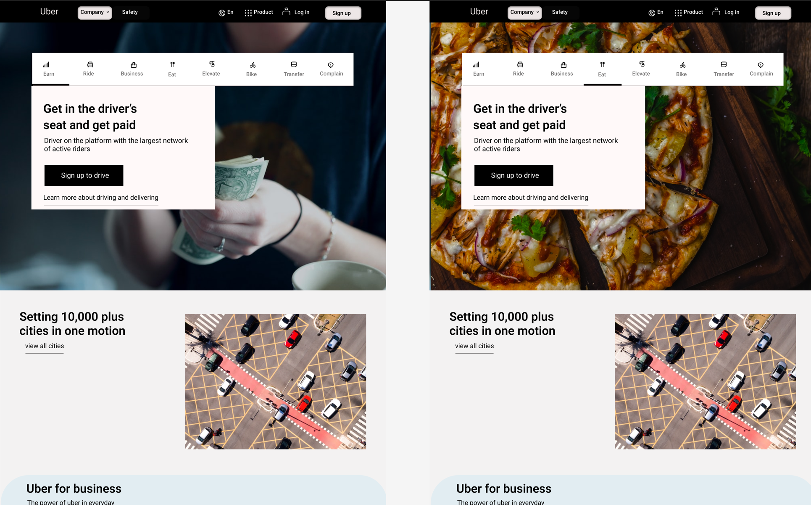

Landing Pages

A landing page is a standalone web
page that a person "lands" on after clicking through from an email, ad, or other digital location. Every
content strategy should include the use of landing pages to convert more traffic and increase conversions.In
addition,
web design should also
consider the content on the website. The content should be clear, concise, and relevant to the user's needs. It
should
also be optimized
for search engines, making it easier for users to find the website through search queries.We get you. But
there’s an old
maxim that applies here:
Know the rules well, so you can break them effectively. It turns out that almost all landing pages that convert
well do
so because they’ve got the fundamentals down. No matter their conversion goal. No matter their intended
audience. No
matter the price point of what they’re offering. And no matter the type of campaign they’re running. This is
largely
because the structure of a landing page aligns to persuasion and there are elements that help persuade.
By understanding the anatomy of a landing page, and by making sure you stick to these rules, you’ll ensure you
actually
convert. Then you can find unique and clever ways to optimize the heck of it.
Take a look at the illustration.
3D Icons
Three-dimensional icons are the latest craze,
With depth and texture, they amaze.
On your screen, they pop and stand out,
Adding a touch of modern clout.Their shadows and highlights create a visual appeal,
Making it hard for any flat icon to steal the deal.A trend that has caught on and is here to stay, we can swear.
Though your own pages might look a little different, the same basic building blocks of
landing page structure should be present. Below, we’ll discuss each in more detail.
3Dicons is a set of beautifully crafted open-source 3D icons that have been created in Blender and made
available to the
community.
It has been released under a Creative Commons CC0 license, and hence it is free to use for personal and
commercial
projects, as well as
copying, editing, remixing, sharing, and redrawing. This resource will make it easier for designers and content
creators
to produce
beautiful and effective designs in less time. Although all icons are designed and rendered with a few color
options to
meet most of your
production-ready needs, you can use
these images as placeholders until you are ready to outsource a 3D illustrator.
Making it hard for any flat icon to steal the deal.
Web Designing

Web design refers to the process of creating and
designing a website. It encompasses different aspects such as layout, color, graphics, fonts, and content.
A well-designed website not only looks visually appealing but also provides a good user experience.In addition,
web
design should also
consider the content on the website. The content should be clear, concise, and relevant to the user's needs. It
should
also be optimized
for search engines, making it easier for users to find the website through search queries.A touch of realism
that's hard
to conceal.
So if you want your design to be on-trend and hip,
We respect your time and feel like you deserve only the best of the best. That’s why we’ve gathered only the web
design
blogs that have been updated recently. Fire up your
Feedly account and get ready to add more than a few subscriptions.